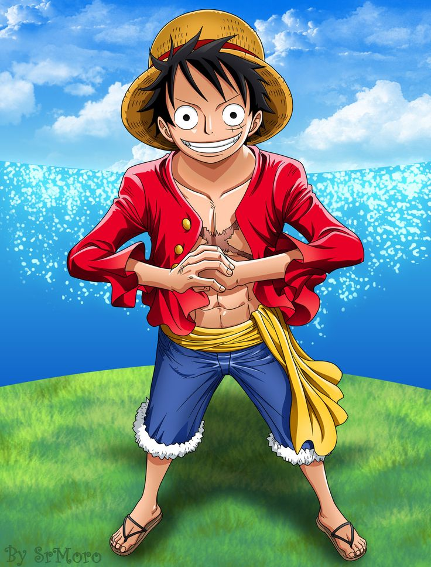
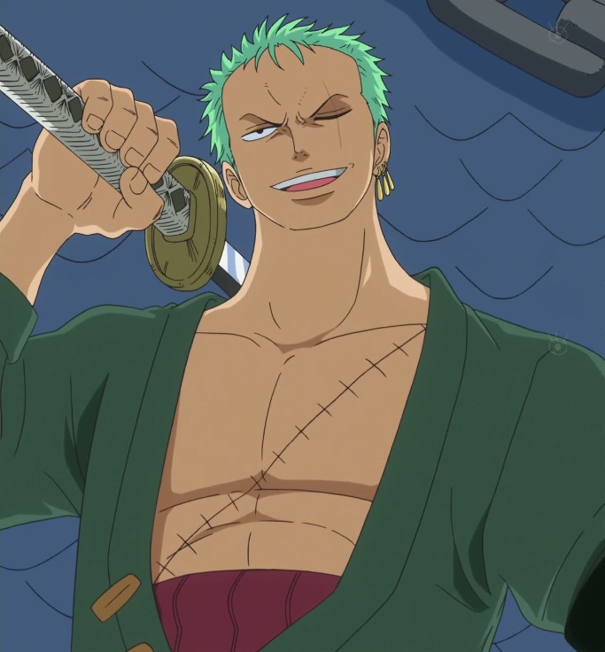

CHAPTERS

LUFFY
Il suo sogno è quello di diventare Re dei pirati, titolo che, secondo lui, identifica la persona più libera del mondo, in grado di vivere tutte le avventure che vuole

ZORO
Il suo sogno è quello di diventare il migliore spadaccino al mondo,Zoro è descritto come un ragazzo muscoloso con i capelli verdi; ha una cicatrice sul torace che parte dalla spalla sinistra

SANJI
Veste sempre elegantemente,cioè con un completo nero e scarpe dello stesso colore,con sotto una camicia celeste a righe nere.Porta i capelli biondi a frangetta, Il suo sogno è trovare l'All Blue